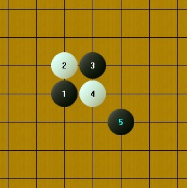
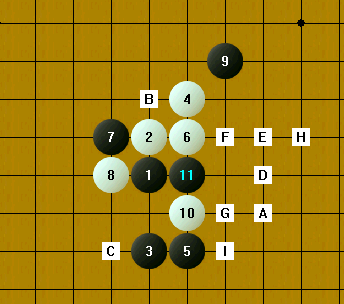
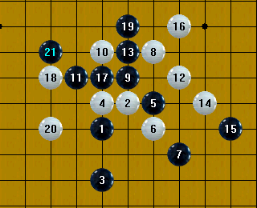
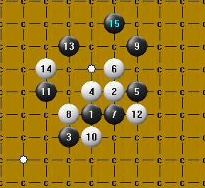
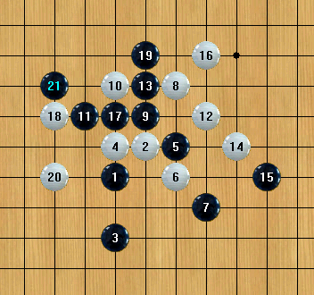
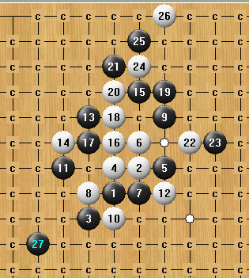
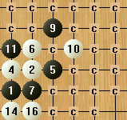

PS棋子毛边解决方案
#1 PS棋子毛边解决方案 作者：旅游者 发表时间：2009-6-30 20:31:44
把背景色设为与棋盘相同的颜色#2 Re:PS棋子毛边解决方案 作者：失落刀 发表时间：2009-6-30 20:46:56
看明白了，但不知道具体怎么操作#3 Re:PS棋子毛边解决方案 作者：越狱行辕 发表时间：2009-6-30 20:47:23
不是啊 还是有白色的毛边
#4 Re:PS棋子毛边解决方案 作者：越狱行辕 发表时间：2009-6-30 20:50:45
我到是 把白色的毛边弄没了。。。白色的棋盘。。。。太亮#5 Re:PS棋子毛边解决方案 作者：旅游者 发表时间：2009-6-30 20:51:10
在棋子下加一个图层，取棋盘颜色，存为bmp格式。
#6 Re:PS棋子毛边解决方案 作者：失落刀 发表时间：2009-6-30 20:52:20
显然，你只说一句话，我们是无法领悟的。#7 Re:PS棋子毛边解决方案 作者：越狱行辕 发表时间：2009-6-30 20:55:35
。。。。。看不懂 似乎很难？怎么图层？
#8 Re:Re:PS棋子毛边解决方案 作者：旅游者 发表时间：2009-6-30 20:57:54
引用：
原文由 失落刀 发表于 2009-6-30 20:52:20 :
显然，你只说一句话，我们是无法领悟的。
这样行吗？
［ 失落刀 于 2009-6-30 21:03:18 时奖励此帖[金币加 20 威望加1］
［ 越狱行辕 于 2009-6-30 21:04:04 时花20金币送鲜花一朵］
#9 Re:PS棋子毛边解决方案 作者：失落刀 发表时间：2009-6-30 21:02:50

#10 Re:PS棋子毛边解决方案 作者：越狱行辕 发表时间：2009-6-30 21:05:32
再问大哥一个问题 棋子能再圆点么#11 Re:PS棋子毛边解决方案 作者：越狱行辕 发表时间：2009-6-30 21:10:30

可惜标记变这样了
#12 Re:PS棋子毛边解决方案 作者：王小 发表时间：2009-6-30 22:27:28
有毛边 是因为没有alpha图层。bmp也可以带alpha通道，但是需要32位的，一般的是24位的。
现在一般用 tga，特别是3D图像。网络爱用png，其实png也是非常不错的。
当然还可以用其他格式。
但是，还是有个问题，你在ps里肯定需要加通道层。
为什么加通道会让我们的图像看起来和外界更融合呢（请参考抗锯齿原理和图像数字化处理）
#13 Re:Re:PS棋子毛边解决方案 作者：旅游者 发表时间：2009-7-1 0:31:26
引用：
原文由 王小 发表于 2009-6-30 22:27:28 :有毛边 是因为没有alpha图层。bmp也可以带alpha通道，但是需要32位的，一般的是24位的。
现在一般用 tga，特别是3D图像。网络爱用png，其实png也是非常不错的。
当然还可以用其他格式。
但是，还是有个问题，你在ps里肯定需要加通道层。
为什么加通道会让我们的图像看起来和外界更融合呢（请参考抗锯齿原理和图像数字化处理）
 zxg提供的棋盘棋子PS2.0.rar
zxg提供的棋盘棋子PS2.0.rar
#14 Re:PS棋子毛边解决方案 作者：4 发表时间：2009-7-1 2:31:20
标记背景色是和（盘面颜色）一致的，可以在 设置-》盘面显示-》颜色-》盘面颜色设置。
#15 Re:Re:Re:PS棋子毛边解决方案 作者：旅游者 发表时间：2009-7-1 8:17:52
引用：改进了一下棋子，不过棋盘图片发错了，应该用第一次发的那个
原文由 旅游者 发表于 2009-7-1 0:31:26 :引用：
原文由 王小 发表于 2009-6-30 22:27:28 :有毛边 是因为没有alpha图层。bmp也可以带alpha通道，但是需要32位的，一般的是24位的。
现在一般用 tga，特别是3D图像。网络爱用png，其实png也是非常不错的。
当然还可以用其他格式。
但是，还是有个问题，你在ps里肯定需要加通道层。
为什么加通道会让我们的图像看起来和外界更融合呢（请参考抗锯齿原理和图像数字化处理）
#16 Re:PS棋子毛边解决方案 作者：uniwin 发表时间：2009-7-1 15:14:11
根据15楼的旅游者提供的修改后的棋盘及棋子，试过了，漂亮了好多。
但是，11楼的越狱行辕提到的标记的问题依然存在。
期待高手高高手予以解决。
----按照14楼四哥的办法修改了一下，好多了。
#17 Re:PS棋子毛边解决方案 作者：旅游者 发表时间：2009-7-3 22:13:48
［ 失落刀 于 2009-7-3 22:17:05 时花20金币送鲜花一朵］
#18 Re:PS棋子毛边解决方案 作者：旅游者 发表时间：2009-7-3 22:37:40
#19 Re:PS棋子毛边解决方案 作者：旅游者 发表时间：2009-7-3 22:44:24
磨砂.rar
［ 失落刀 于 2009-7-3 22:52:04 时奖励此帖[金币加 20 威望加1］
#20 Re:Re:PS棋子毛边解决方案 作者：旅游者 发表时间：2009-7-3 22:57:54
 #21 Re:Re:PS棋子毛边解决方案 作者：lijeki 发表时间：2009-7-6 17:03:24

我在 设置-》盘面显示-》颜色-》盘面颜色设置 里面调了颜色，可是标记背景色总是和棋盘图片相差一点，请问有没有更好的方法
#22 Re:Re:Re:PS棋子毛边解决方案 作者：旅游者 发表时间：2009-7-6 23:08:58
把背景图片放入画图软件中，查一下它的RGB值
引用：
原文由 lijeki 发表于 2009-7-6 17:03:24 :
我在 设置-》盘面显示-》颜色-》盘面颜色设置 里面调了颜色，可是标记背景色总是和棋盘图片相差一点，请问有没有更好的方法
#23 Re:PS棋子毛边解决方案 作者：lijeki 发表时间：2009-7-7 14:15:52
我用画图打开了背景图，但是找不到查RGB值这个选项，可以说具体一点么#24 Re:PS棋子毛边解决方案 作者：旅游者 发表时间：2009-7-7 21:08:32
photoshop里有